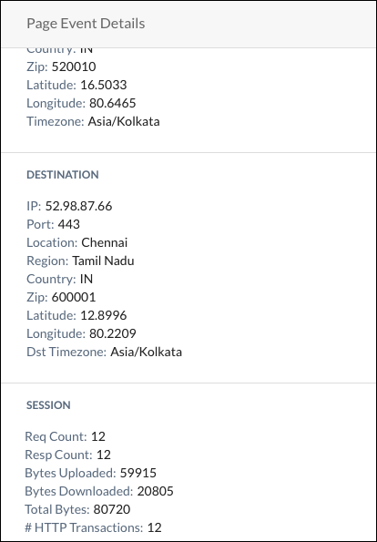
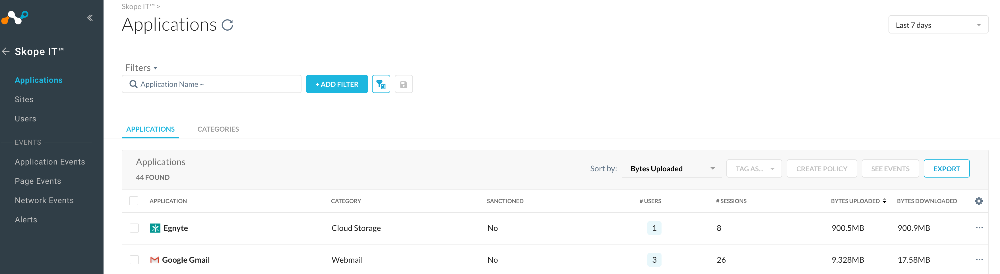
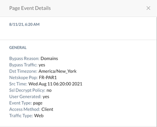

Page Events FAQs
This article offers insight into how Page Events are generated and clarifies some of the misconceptions related to Page Events.
Page Events provide visibility into web pages accessed by an end-user. All the resources required for rendering a web page (images, ads, html) and any user activity, like uploading a file, are summarized into a single page event.
Page Events are generated based on heuristics algorithm with a balance between volume of events generated and captured user web activity. The algorithm enforces certain match criteria to summarize all the URL requests (including URLs clicked by the user and URLs used for page rendering, like images) originating on a web page into a Page Event. The core element of the algorithm is as follows.
Page URL response content-length is > 3K bytes
Page URL response content-type is text/html
More than 10 urls with the referrer set to the Page URL
There is a 60 seconds wait time to meet the criteria #3
When the above core algorithm is not met there is an additional enhancement added to roll up the collected data into a URL domain Page Event with a wait time of 120 seconds.
Here are examples of session fields and corresponding meaning.
|  |
Req Count: Total number of requests received from end-user web-client (Browser, Native-app)
Resp Count: Total number of responses received from destination site
Bytes Uploaded: Total number of bytes received from end-user web-client
Bytes Downloaded: Total number of bytes received from destination site
Total Bytes: Sum of bytes uploaded and downloaded
HTTP Transactions: Total number of request/response pair.
|  |
Applications, Users, and Sites data is computed from Page Events. A summarization process is continuously run on the Page Events to update the Application, Sites, and User data.
When traffic is steered to the Netskope proxy and bypassed, either due to a steering bypass configuration or a SSL do-not decrypt policy, this can impact Page Events generation. The requests that are bypassed can cause the third algorithm criteria to not be satisfied. Reduced Page Events emitted will also have a direct impact on Application, Sites, and Users summarization. Please note that when traffic is bypassed, the Netskope proxy service generates a Page Event with the Bypass Traffic field set to yes, and these events are suppressed at the rate of 1 event per domain per minute. These bypassed events do not capture the total bytes transferred as well.
|  |
The Page Event algorithm relies on the Referrer field to aggregate the URLs into a Page Event. For example, when a user is visiting a CNN site, there can be Ad requests to GoogleAds. So every GoogleAd request will have the Referrer field set to CNN and a Page Event gets generated with domain CNN capturing all the GoogleAd requests. So if traffic to CNN is not steered but GoogleAds is steered, you can expect to see a Page Event on CNN (provided page-algo is met). This behavior aligns with the user view of the web page on their browser.
No, Application and Page Events are two different independent Skope IT modules. Application Events provide information about a user's interaction with an application, like Login, Logout, Upload, Download, Share, and so on. Page Events capture the view of a user accessing the Web. The bytes information in the Page Events may or may not reflect the application activity details. Example: An app-event for Download activity with file-size 1GB may not be included in the bytes downloaded for the corresponding app Page Event.
For site A, the first three criteria may not match, or when the download link is accessed it was outside the fourth criteria match. Due to the nature of the algorithm, some URLs can get excluded from the Page Event generation process. Page Events capture user web activity, and is not a tool for measuring network bandwidth.